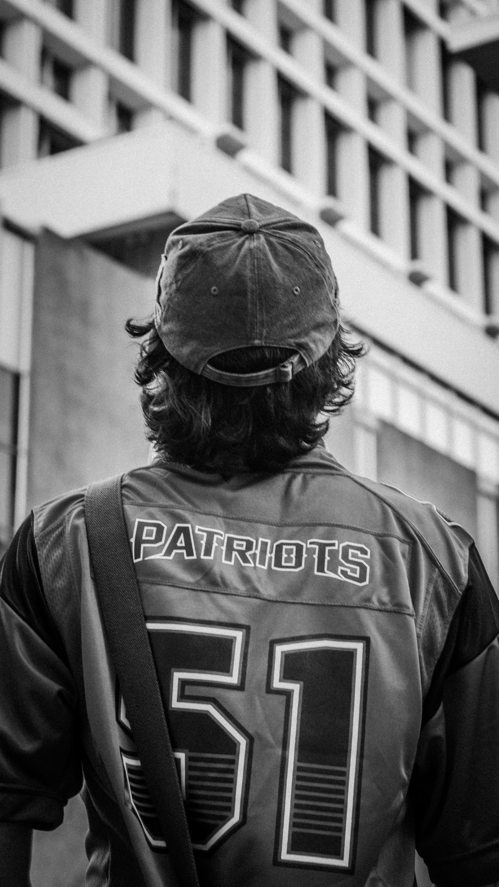

Skip to content
NOT SOO DEEP
PHOTO
Photo sets
About
Independent photography / digital & film
NOT SOO
DEEP PHOTO
Curiosity makes life more colorful.
Explore the photo sets
→

Black and white / digital
×